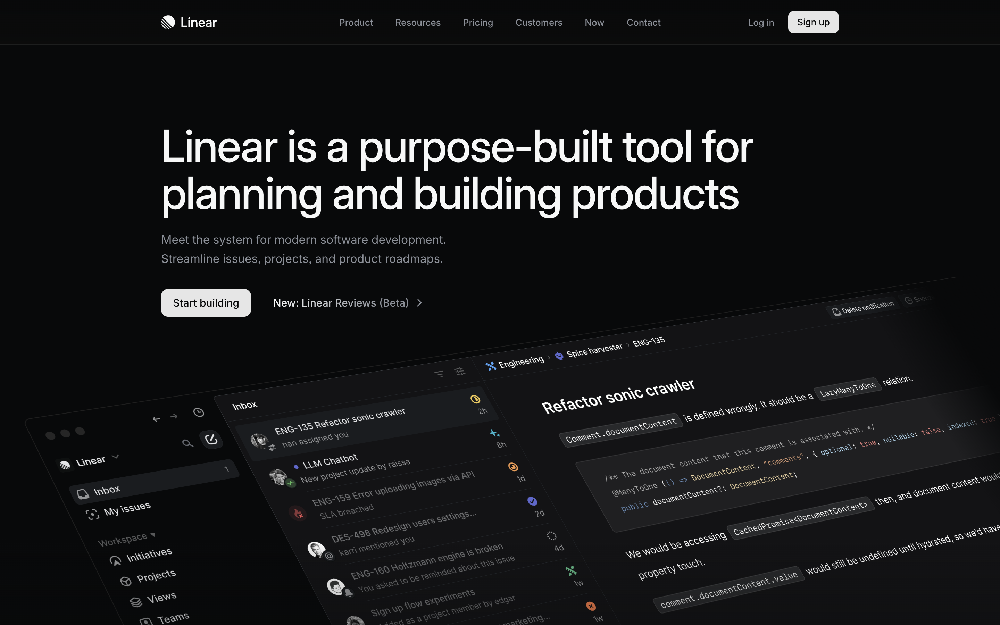
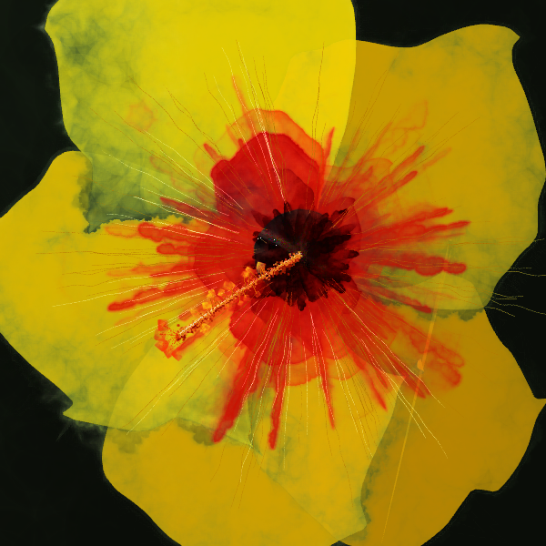
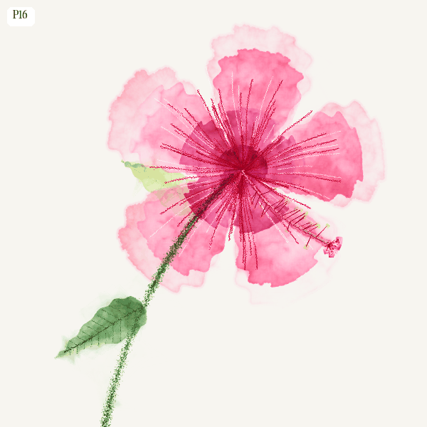
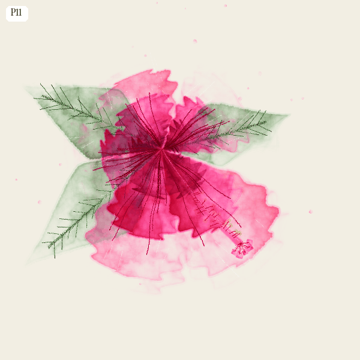
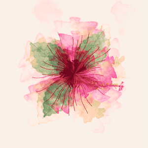
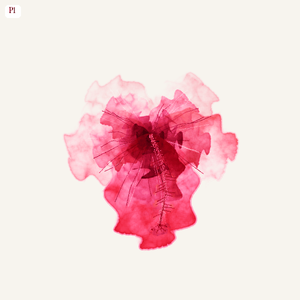
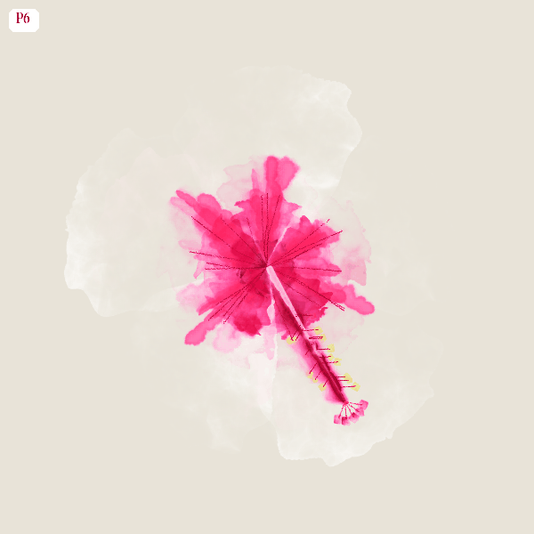
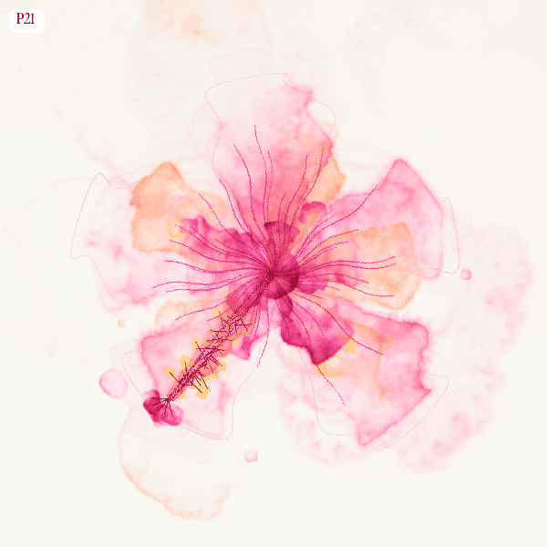

a watercolour painting of a rainy day on the beach

prompt
a watercolour painting of a rainy day on the beach
output

A long sweep of golden sand on a rainy beach stretches from the lower left into the distance, its surface darkened and glossy where the rain has soaked it, catching faint reflections of the overcast sky. Moody, heavy clouds fill the upper two-thirds of the frame — layered banks of pewter grey and bruised violet pressing low over the horizon, their edges diffused and waterlogged. The ocean occupies the right half, rolling in with teal-green waves capped by churning white foam, the water dense and agitated under the grey light. The composition is wide and panoramic, shot from a low standing perspective looking along the shoreline, with the wet sand in the foreground tapering toward distant headlands and faint coastal buildings barely visible through a veil of rain. Light is flat and diffuse, filtered through the cloud layer, giving everything a soft silvery cast except for the warm golden hue of the sand, which glows subtly even under the overcast conditions — pale gold, warm ochre, slate grey, muted teal, cream white, and cool violet dominate the palette. Fine rain falls visibly in the mid-distance, slightly hazing the headlands and softening edges. The air feels humid and thick, carrying the weight of an approaching squall. Textures range from the granular gleam of wet sand to the frothy churn of breaking surf to the smooth, heavy mass of cloud. The mood is contemplative and quietly melancholic — the beauty of solitude on an empty beach in the rain. Rendered in loose traditional watercolour, wet-on-wet washes bleeding softly in the sky and sea, drier brushwork and granulated pigment on the sand, with the white of the paper intentionally left exposed in the foam and highlights — edges that bloom rather than sharpen, in the tradition of plein-air studies.

original


variations made with image models
why not images?

how do I prevent premature convergence?

by holding ideas in space
where you can Explore, convey and articulate
and stay open
how do I prevent premature convergence?
by holding ideas in space
where you can Explore, convey and articulate
and stay open
nano banana

Gemini 3 Flash + p5.js + brush library







